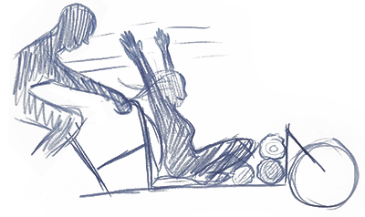
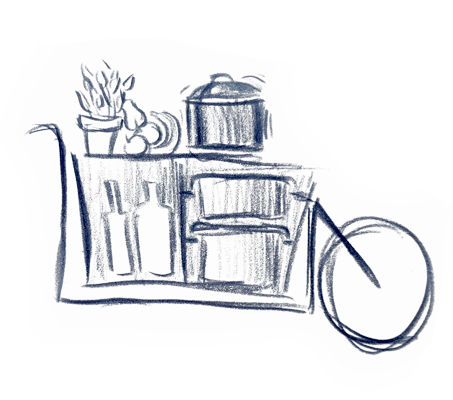

Weitere Add-on Ideen
Neben dem vorgestellten Add-on für den Urlaub gibt es weitere Add-ons, stehen weitere Add-on-Ideen für warme Jahreszeiten im Ausblick
Das DJ-Add-on
 Für die Outdoor Parties eignet sich das DJ-Add-on, das fertig zusammengebaut ist mit Mischpult und Soundanlage. So müssen DJs nur noch mit dem Cargobike zur Party hinradeln, den Strom anschließen und loslegen.
Für die Outdoor Parties eignet sich das DJ-Add-on, das fertig zusammengebaut ist mit Mischpult und Soundanlage. So müssen DJs nur noch mit dem Cargobike zur Party hinradeln, den Strom anschließen und loslegen.
Das Date-Add-on
Überlegt man sich, wie man den Partner überraschen kann nach der Arbeit, kann man ihn/sie mit dem Cargobike in Kombination mit dem Date-Add-on abholen.
Dieses beinhaltet eine Picknickdecke, Getränke, und Holz für ein Lagerfeuer. So setzt sich der/die Partner/in entspannt ins Cargobike und freut sich auf den Feierabendausflug. Selbstverständlich ist das Date-Add-on auch für Tagesausflüge ausleihbar.
Das Koch-Add-on

Für ein besonderes Kocherlebnis eignet sich das Koch-Add-on. Ob für Gartenfeiern oder Firmenanlässe, mit dem Kochadd-on und dem dazu buchbaren Koch kann man an jedem möglichen Platz im freien nicht nur bei der Zubereitung zuschauen, sondern sich auch verköstigen lassen. Die Bestandteile des Koch-Add-ons sind eine integrierte Herdplatte, Grill, Kochutensilien mit Geschirr, Besteck und Gläser, ein Kühlbereich und Arbeitsplatten.
Trash-2-cash
Eine Umweltfreundliche Alternative zu neuem Material wäre es Add-ons nach dem Trash-2-Cash Prinzip zu verbrauchen. Das unterstützt den Wert der Nachhaltigkeit und reduziert die Erstellung neuer Materialien.
Unsere Vision -
Das Fahrrad als Verkehrsmittel der Zukunft etablieren